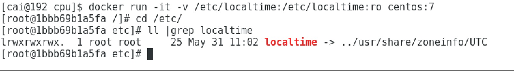

虽然docker化是大势所趋，但是由于docker的缺陷，容器化过程中还是有不少坑要填。
cpu核数获取
很多情况下我们会用根据cpu核数设置线程数，最后调用的一般都是sysconf(_SC_NPROCESSORS_CONF) get_nprocs(void) get_nprocs_conf(void)这些系统调用，最后这些系统调用基本是从/sys/devices/system/cpu /sys/devices/system/cpu/online这两个地方获取到系统核数，docker并没有虚拟化/sys目录，所以在docker里面读到的数据是宿主系统的核数。
因为这些数据都是以文件的形式存的，所以可以通过fuse hook对此类的文件read调用，计算出实际分配给docker的核数并返回
内存
内存通过sysconf(_SC_PHYS_PAGES)或者sysinfo的方法获取的数据是从内存获取的，所以没发通过fuse hook读写的，c的话建议从/proc/memory之类的地方获取,java的话，只能设置jvm堆大小解决这个问题，不然jvm会因为根据宿主系统扩大自己的内存，超过docker限制后会被docker杀掉。
宿主机系统与容器内部的用户权限
Linux内核负责管理uid和gid，内核级系统调用时，用于确定是否授予该请求权限。例如当进程尝试写入文件时，内核会检查创建进程的uid和gid，以确定它是否有足够的权限来修改文件。这里没有使用用户名，使用了uid。
当在服务器上运行Docker容器时，仍然使用同一个内核内核，uids和gids都由单个内核控制
linux中显示的用户名（和组名）不是内核的一部分，而是由外部工具/etc/passwd，ldap，kerberos等管理的。所以实际用用户名去授权的话，并不能在宿主机和容器通用
在一个新的镜像中通过useradd创建的用户一般是由1000开始递增的，这个时候容器内部1000的uid对应的宿主机1000的uid的用户，造成即使在用容器中用了不同的用户名，映射到宿主系统中都是uid为1000的用户，对用户的权限做不到比较好的隔离。
比较好的做法应该是预先分配好每个用户的uid 在dockerfile中创建用户的时候也指定uid，正确的把用户uid联系在一起
时区问题
网上一般的做法推荐是 -v /etc/localtime:/etc/localtime:ro 或者 RUN echo “Asia/shanghai” > /etc/timezone
这两种方法其实都存在点问题，第一种方法挂载/etc/localtime后/etc/localtime仍然是链到/usr/share/zoneinfo/UTC，java的话，会判断/etc/localtime是不是软链，如果是的话直接读取链接的内容导致 -v不起作用

第二种方法的话，写死了时区，对于存在不同时区的机房的话，也是不适用